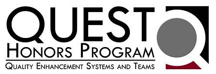
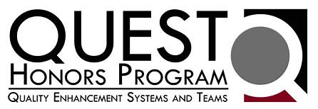
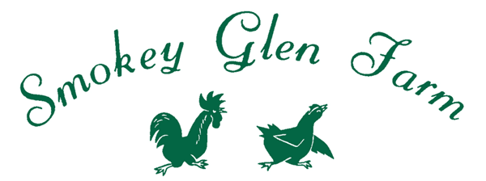
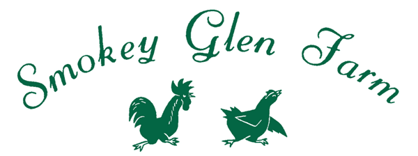

Summer 2024
The Spain Log
Join me on an epic two-week adventure as we uncover the breathtaking wonders of Spain – from stunning landscapes to rich cultural treasures and unforgettable experiences.
Read PDFI am a passionate Finance and Information Systems student at the University of Maryland, dedicated to creating innovative, data-driven solutions that solve real-world problems. With hands-on experience in consulting and entrepreneurship, I blend analytical expertise with leadership to deliver dynamic, high-performing results.

I’m Jack Karakashian — builder, problem-solver, and strategist. I design systems that move people, not just data.
At the core of everything I do is a belief: the best solutions are the ones that serve. Whether I’m managing projects, leading a startup, or launching student organizations, I focus on creating results that are thoughtful, actionable, and real.
I bring a background in Finance and Information Systems, but what defines me is forward motion. I ask big questions. I move quickly. I lead with clarity and care. I believe in staying grounded while aiming high.
This site is more than a portfolio. It’s a reflection of how I think, work, and lead. If you're building something important, and you think I can help — let’s talk.

 


 

"I am full of C.R.A.P!"
- Jack Karakashian
Harnessing diverse ideas and perspectives to achieve shared goals. I believe the best solutions emerge when talented people come together, combining their unique strengths to drive meaningful, impactful results.
Adapting and persevering through challenges with determination and a positive mindset. Every setback is an opportunity to learn, grow, and emerge stronger than before.
Breaking down complex problems into actionable insights through data-driven thinking and systematic analysis. I leverage quantitative methods, research, and strategic reasoning to uncover patterns, identify opportunities, and drive informed decision-making.
Demonstrating integrity, accountability, and respect in every interaction and endeavor. I believe that how you do anything is how you do everything—excellence is a habit, not an accident.
This summer, I joined Khanjur Research & Development, a nimble startup founded by Sabrina Curtis—a trailblazing engineer and expert in Shape Memory Alloys. Khanjur focuses on cutting-edge applications of these materials in actuators, semiconductors, and sputtering technologies. As a small team tackling complex, high-stakes projects, the company embodies adaptability, innovation, and deep technical curiosity—making it the perfect environment to explore the business side of advanced materials.
My role spanned strategy, pricing, and operations. I led the development of a comprehensive pricing system for an $800,000 proposal submitted to the Department of Defense, incorporating direct and indirect costs, sensitivity analyses, and breakeven modeling that supported a potential capital investment in new manufacturing machinery.
Beyond financial modeling, I took charge of supplier outreach and vendor due diligence, compiling a side-by-side comparison of 10 companies based on pricing, capabilities, and inspection standards to inform sourcing decisions. I also delivered five strategic briefing reports to company leadership, offering actionable recommendations on market positioning, customer segmentation, and industry trends.
This internship didn’t just deepen my technical and analytical skills—it taught me how to operate within the fast-moving, often ambiguous world of a startup, where business decisions are intertwined with specialized, technical products. I learned to simplify complexity, move quickly, and think holistically about growth.
As Vice President of Chapter Operations for Delta Sigma Pi, I serve as the logistical and strategic backbone of our chapter—ensuring national reporting compliance, managing internal communications, and driving continuous improvement through the Chapter Management Program (CMP).
To modernize our operations and reinforce the fraternity’s core pillars, I helped design and launch a point bucket system. This initiative encouraged members to stay balanced across areas like DEI, Health & Wellness, and Fundraising.
To make the system seamless, I engineered a fully automated point-tracking solution in Excel using VBA and advanced formulas. Members could view real-time audits of their points across each bucket—a first for the chapter.
Taking it a step further, I built a custom mobile app using React Native, TypeScript, and Expo, hosted on GitHub. The app centralizes our operations by syncing event forms directly to Google Calendar via API, logging attendance codes to a Supabase backend in real time, delivering event analytics for officers and admins, and providing easy access to our newsletter, point audit system, and test bank.
This project has not only streamlined internal processes but also helped redefine what accountability and engagement look like in a professional fraternity.
As a lifelong Capitals fan, joining the Caps Crew was a full-circle moment. Helped shape the game-day experience for 20,000+ fans through live promotions, sponsor activations, and on-ice entertainment.
Executed 10+ in-game promotions per night, trained 50+ contest participants, and maintained 100% error-free delivery. Used real-time crowd analytics to boost fan engagement by 20% per game.
I founded and built the University of Maryland's Club Roller Hockey team from scratch, forming a 30+ member roster and introducing two tiers of participation for flexibility and affordability. I served as captain, play designer, and team strategist.
Off the rink, I managed finances, secured $2K+ in sponsorships, organized logistics for travel and gear, and ran marketing campaigns to build visibility on campus.
This initiative built a competitive and community-driven team and helped expand NCRHA’s presence in the region.
Oversee University of Maryland's Recreation & Wellness facility, directing a 10-person team and ensuring safety across the weight room. Reduced medical response time by 25%, boosted staff satisfaction scores by 15%, and reduced incidents by 15%.
Self-initiated a consultant-style research project exploring whether staff could work out on shift. Developed a 20+ page white paper analyzing time studies, risk tracking, staff motivation, patron perception, and implementation planning—driving strategic decision-making for campus wellness operations.
Gained first professional exposure to nonprofit auditing at GRF CPAs & Advisors. Analyzed cash disbursements, payroll records, and financial statements across multiple quarters for mission-driven organizations including the Chesapeake Bay Foundation.
Participated in audit procedure training, learned nonprofit accounting principles, and researched differences between nonprofit and for-profit financial reporting. Gained hands-on experience with Citrix compliance systems.
Led food service operations for the club’s poolside snack bar, managing inventory, mentoring teen staff, and ensuring five-star member experiences under pressure.
Introduced a creative menu item—the “Minion Slushie”—which drove a 7x increase in slushie sales and boosted team morale and customer satisfaction.
Created a self-evaluation tool for staff to improve performance and confidence without micromanagement.
Learned foundational work ethic at Smokey Glen Farm, a 70-year family institution in the D.C. area. Promoted to Event Coordination Supervisor at 16, leading teams of up to 20 staff for events ranging from 20 to 3,000 guests.
Managed buffet operations, inventory, staffing logistics, and event setup/teardown. Adapted operations during extreme weather, optimized staffing across teams, and began thinking systematically about how legacy businesses can evolve through automation and data-driven processes. Honored as General Employee of the Year in 2021.

Demonstrated proficiency in Porter's 5 forces and proposed an actionable recommendation to improve Zoom's strategy and competitive advantage.
View Project
Planning, analyzing, and designing a system to track where and how beer is selling for a quickly growing craft brand.
View Project
Analyzed and compared four different Course of Actions to recommend plan to optimize Army's ROI.
View Project
Utilized advanced data techniques to optimize vehicle fleet size by 70% and enhance operational efficiency for the Division of Information Technology (DIT).
View Project
Led the development of a MySQL database, created actionable queries, and generated Tableau reports to manage customer accounts, improve agent performance, and track transactions.
View Project
Created targeted marketing recommendations based on analyzed enrollment and lead data, along with website design, to identify strategies for improving lead-to-purchase conversion rates.
View Project
Collaborated with a cross-functional team to develop a market report, competitive analysis, and prototype for an innovative product that removes pet hair from clothing while leaving a pleasant aroma.
View ProjectJoin me on an epic two-week adventure as we uncover the breathtaking wonders of Spain – from stunning landscapes to rich cultural treasures and unforgettable experiences.
Read PDFDiscover the pivotal role of nuclear power, its dominance in energy production, and why it stands as the most critical solution for our climate and future.
Read PDFDownload my comprehensive resume to learn more about my background, experience, and qualifications.